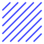
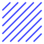

About
Hi, I'm Janet.

I'm a Graphic Design graduate from Maryland Institute College of Art, where my curiosity for coding sparked during a Generative Typography class using Processing. The allure of coding to create art fascinated me.
In 2023, I pivoted to programming, diving into Fullstack development with the MERN stack. Combining my design systems and UX/UI knowledge with programming, I found a seamless synergy. Leveraging skills like loops and objects from my design background and acquiring new backend skills, I navigated server setup, database management, and route handling.
With a knack for simplifying complex concepts, honed through my Graphic Design/Art History background, I excel in bridging interdisciplinary communication. A quick learner, adaptable, and adept in collaborative environments, I bring a unique blend of creativity and technical proficiency.
Connect with me on GitHub, LinkedIn, and check out my thoughts on programming and design on Medium.